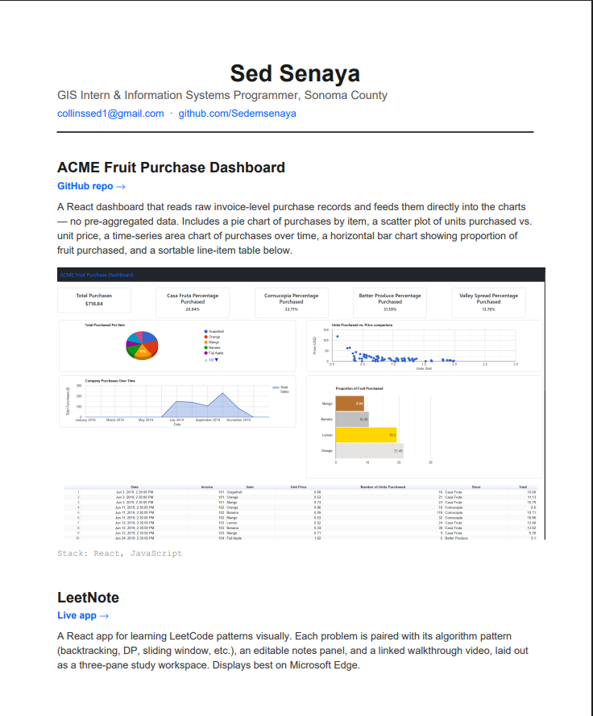
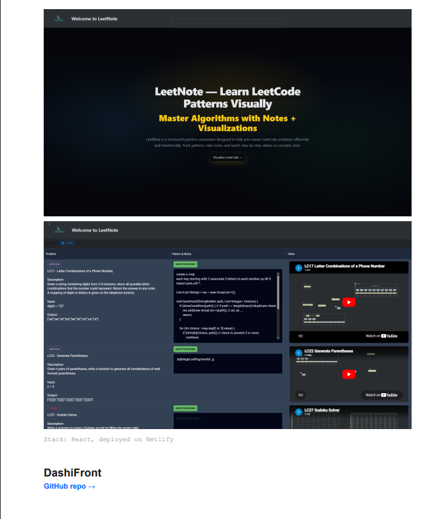
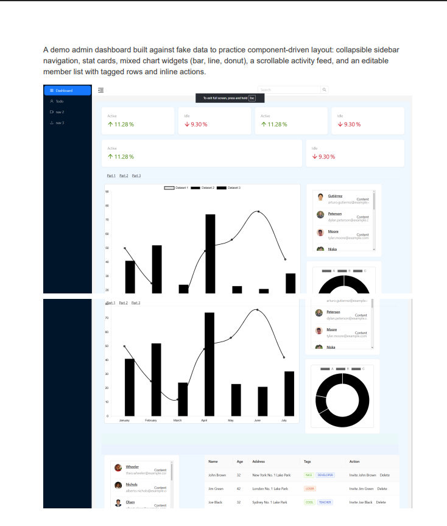
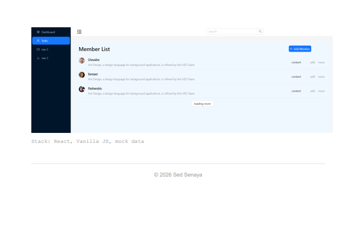

About Me
My name is Collins Senaya, and I am a computer science professional with a strong interest in software development, data engineering, geographic information systems (GIS), and information technology infrastructure. I enjoy working with technology to solve practical problems, automate repetitive processes, and improve how organizations manage and use their data. My approach to technology combines curiosity, continuous learning, and a focus on building solutions that are reliable, efficient, and useful.
I earned my Bachelor of Science in Computer Science from Sonoma State University. Throughout my academic and professional development, I have focused on strengthening my programming, database, and problem-solving skills. I am particularly interested in understanding how software interacts with databases, operating systems, networks, and larger computing environments. I enjoy learning how systems work behind the scenes, not just how to use the applications built on top of them.
Currently, I work as an Extra Help Intern with Sonoma County's Information Systems Department. Since January 2024, I have gained practical experience supporting data-driven projects through Python programming, SQL development, and GIS technologies. My work primarily involves developing scripts, maintaining database processes, automating workflows, and working with information stored across different systems.
A significant part of my role involves working with Microsoft SQL Server and SQL Server Management Studio. I work with stored procedures, triggers, views, and reporting processes to support organizational data requirements. I also use Python to automate tasks and connect systems through APIs. My work with XML and JSON helps me process and exchange information between different applications and platforms.
I have also gained experience working with Esri technologies, including ArcGIS Pro, ArcGIS Online, ArcGIS REST APIs, and ArcGIS Python libraries. One of my projects involved developing synchronization processes between ArcGIS Online feature layers and on-premises SQL Server databases. These workflows support important county operations, including public safety and emergency dispatch-related data. I have also contributed to GIS publishing automation, reducing manual uploads by approximately 80%. Other projects have involved automating SQL Server maintenance tasks, auditing GIS portal URLs, and improving data access and reporting workflows.
My professional interests extend beyond application development and database management. I am increasingly interested in computer architecture, operating systems, computer networking, cybersecurity, distributed systems, cloud computing, and GPU computing. I want to develop a deeper understanding of the infrastructure that supports modern software, enterprise applications, data platforms, and artificial intelligence systems.
To complement my academic background, I have earned certifications including AWS Certified Cloud Practitioner and Databricks Data Engineer Associate. I continue to build my technical knowledge through independent study, practical projects, and professional development.
I am also interested in pursuing graduate-level studies in Computer Engineering at the University of California, Riverside, with an emphasis on developing stronger foundations in computer systems and infrastructure.
Outside of my professional responsibilities, I enjoy exploring new programming tools, experimenting with development environments, and building projects that help me understand technical concepts through practical application. I believe that becoming a strong technology professional requires more than learning individual programming languages or tools. It requires understanding how different components work together to solve larger problems.
My long-term goal is to continue growing as an engineer who can work across software, databases, and computing infrastructure while contributing to meaningful technology projects.
• Develop Python scripts to automate GIS and database workflows.
• Write and maintain SQL queries, stored procedures, triggers, and views using Microsoft SQL Server and SSMS.
• Develop automated synchronization processes between ArcGIS Online feature layers and on-premises SQL Server databases.
• Work with ArcGIS REST API, ArcGIS Pro, ArcGIS Online, and ArcGIS Python libraries.
• Automate GIS publishing processes, reducing manual uploads by approximately 80%.
• Develop SQL Server maintenance automation for index rebuilding and update statistics, improving spatial query performance by approximately 40%.
• Process and exchange data using XML and JSON.
• Develop data extraction and reporting workflows to support county operations.
• Provided technical support for Windows and macOS computers.
• Assisted users with computer, printer, and network connectivity issues.
• Troubleshot hardware, software, and peripheral problems.
• Assisted with network connectivity and basic switch-related troubleshooting.
• Helped students, faculty, and staff resolve day-to-day technology issues.
• Participated in IBM's software development career development program.
• Explored software engineering concepts and professional development practices.
• Engaged in technical learning activities focused on software development.



